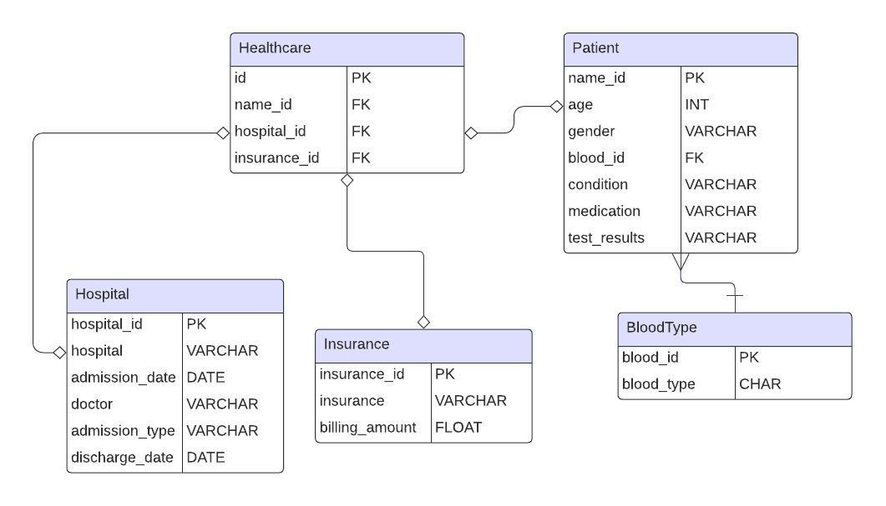
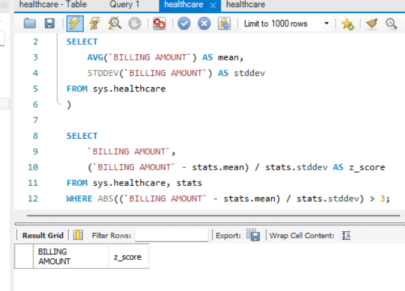
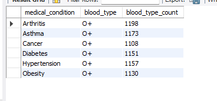
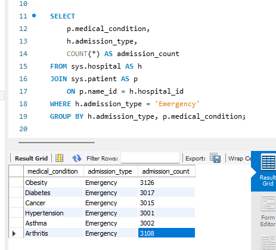
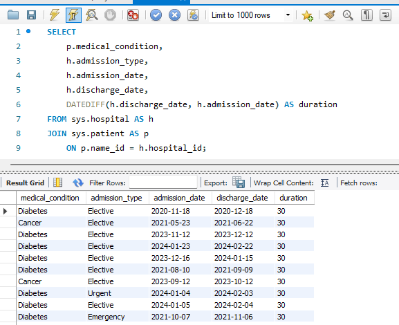

Healthcare Data
Based on a sample dataset from Kaggle , I wanted to identify key trends and insights in a healthcare scenario. I want to answer questions like:
- What are the most affordable insurance providers for those in the hospital?
- Does age, gender, or blood type correlate with certain medical conditions?
- Which conditions are the most affecting, based on duration of stay and test results?
Data Prep
I imported the dataset into MySQL workbench and wanted to plan how the database will look like. I created a schema design and wanted to use the snowflake schema and have normalization to reduce redundancy.
I then created the tables in SQL and referenced the foreign + primary keys in the creation queries. Using COALESCE on multiple columns, I looked for any null values in the columns and there were none. I analyzed for any outliers in the billing amount columns by using the Z-score. I did not find anything above a 3 which would be considered an outlier...
Exploratory Data Analysis (EDA)
Now, I must understand the patterns and relationships in the data. Let us tackle these questions at the beginning.
What are the most affordable insurance providers for those in the hospital?
I ranked the billing amount by the medical condition, to compare which ones are the highest for the same condition. I emphasized using WINDOW functions, RANK, JOINs, and PARTITION so I created this query below:
SELECT
i.insurance AS Insurance,
i.billing_amt AS `Billing Amount`,
CONCAT(
UCASE(LEFT(p.patient_name, 1)),
LCASE(SUBSTRING(p.patient_name, 2))
) AS `Patient`,
DENSE_RANK() OVER(PARTITION BY p.medical_condition ORDER BY i.billing_amt DESC) AS `Billing Rank`,
p.medical_condition
FROM sys.insurance AS i
JOIN sys.patient AS p
ON p.name_id = i.insurance_id;
I found the top and bottom 10 billing rankings categorized by the medical condition.
- For arthritis, the most expensive ones are Cigna (#1), Blue Cross, Medicare and Aetna. But Aetna is leading with the most occurrences (3/8). The least expensive are Aetna (#1), LOTS of Cigna (5/9), and UnitedHealthcare.
- For obesity, Cigna (#1), UnitedHealthcare, Aetna, and Blue Cross are most expensive but Cigna is leading with 4/10. The least expensive one is Blue Cross (#1), Aetna, Cigna, and 1 Medicare. Aetna is leading with 3/9 occurrences.
- For cancer, UnitedHealthcare is on top for most expensive followed by Cigna and Medicare. The most occurrences is a tie between Aetna and UnitedHealthcare. The most inexpensive option is Aetna followed by Medicare and Cigna. Aetna is leading for inexpensive options.
Does age, gender, or blood type correlate with certain medical conditions?
I created a query to find the most common and least common blood types for certain conditions. Using ranking, CTE, and aggregate functions, this query shows the most common blood type:
WITH RankedBloodTypes AS (
SELECT
medical_condition,
b.blood_type,
COUNT(*) AS blood_type_count,
RANK() OVER(PARTITION BY medical_condition ORDER BY blood_type DESC) AS ranking
FROM sys.patient
JOIN sys.bloodtype AS b
ON sys.patient.name_id = b.blood_id
GROUP BY medical_condition, blood_type
)
SELECT
medical_condition,
blood_type,
blood_type_count
FROM
RankedBloodTypes
WHERE
ranking = 1;

The most common throughout all conditions would be blood type of O+ and least common is A-
As for age and gender correlation...I created another separate query to find the gender count and average age of certain conditions. This query below is an example of looking at Male patients with obesity.
SELECT
p.gender,
p.age,
p.medical_condition,
b.blood_type,
AVG(p.age) OVER() AS avg_age,
COUNT(p.gender) OVER() AS gender_count
FROM sys.patient AS p
LEFT JOIN sys.bloodtype AS b
ON b.blood_id = p.name_id
WHERE p.medical_condition = 'Obesity'
AND p.gender = 'Male';
- Cancer: There are more male patients (4625 vs 4602) but not significant, and the average age is 52.56.
- Obesity: There are more female patients (4609 vs 4622) but not significant, and the average age is 51.24.
- Diabetes: There are more male patients (4653 vs 4651) but VERY miniscule change, and the average age is 51.55.
- Asthma: There are more male patients (4632 vs 4553) and the average age is 51.57.
- Hypertension: There are more male patients (4633 vs 4612) but not significant, and the average age is 51.74.
- Arthritis: There are more female patients (4622 vs 4686) and the average age is 51.56.
Which conditions are the most affecting, based on duration of stay and test results?
I found the most urgent medical condition based on the admission type of Emergency, Urgent or Elective. I filtered for 'Emergency'.
Obesity is the most urgent with a leading 3126 vs the least, Hypertension with 3001 admitted patients.
I also wanted to factor in duration of stay and which conditions had the longest duration of stay...
The ones who stayed the longest are diabetic people with 9 records shown for the longest duration (30 days).
Main Takeaways
If you want the least expensive option for health insurance, avoid Cigna as they have appeared in the top expensive results in first place. Aetna would be a good choice for a cheap plan.
If you have O+ blood type and male, you are likely to get some sort of medical condition. It is not unlikely that you will have asthma as asthma has significantly more males than females. If you are around 51, you will be more likely to also have some sort of medical condition.
Be cautious of your health if you are obese and diabetic, as those are the ones that are the most affecting.